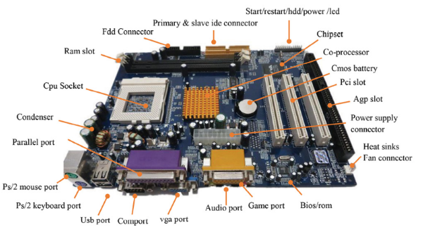

# — Guide
# — Composants en details
## CPU Socket
Un socket est un connecteur utilisé pour interfacer un processeur avec une carte mère. —Wikipedia
En autres mots, où le CPU est placé
## Ram slot
Un socket est un connecteur utilisé pour interfacer un ram avec une carte mère.
En autres mots, où le RAM (Random Access Memory) est placé
## PCI (Peripheral Component Interconnect)
Le PCI est un standard de bus local (interne) permettant de connecter des cartes d'extension sur la carte mère d'un ordinateur.—Wikipedia
Le PCI est généralement utilisé dans les ordinateurs personnels. Voici une liste non exhaustive de cartes d'extension généralement connectées à ce port :
- carte son
- carte graphique
- carte réseau
## AGP (Accelerated Graphics Port)
L'AGP était un port interne destiné exclusivement aux cartes graphiques. Successeur pour ces périphériques du bus PCI, l’AGP permet aux informations de circuler plus rapidement.—Wikipedia
## BIOS (Basic Input/Output System)
Le BIOS est principalement utilisé sur les systèmes informatiques utilisant l'architecture de processeur. Il comporte un ensemble de fonctions, contenu dans la mémoire morte (ROM) de la carte mère de ces ordinateurs, lui permettant d'effectuer des opérations de base, lors de sa mise sous tension. Par exemple l'identification et l'initialisation des périphériques d'alimentation et d’entrée/sortie connectés et la lecture du système d'amorçage—Wikipedia
Le BIOS a un rôle essentiel pour le fonctionnement de la carte mère :
- il initialise tous les composants de la carte mère, du chipset et de certains périphériques ;
- il identifie tous les périphériques internes et externes qui lui sont connectés ;
- si cela n'a pas déjà été fait il initialise l'ordre de priorité des périphériques d'entrée ;
- il démarre le système d'exploitation dans l'ordre croissant des périphériques disponibles en contenant un (fonction dite d'amorçage, ou en anglais : bootstrap).
## Port PS/2 souris et clavier
PS / 2 est un type de port utilisé par les ordinateurs plus anciens pour la connexion des dispositifs d'entrée tel que claviers et souris.—techlib.fr
## Port USB
C'est un port pour l'USB (de l'anglais, « Universal Serial Bus ») est une norme de bus informatique série qui sert à connecter des périphériques informatiques à un ordinateur—Wikipedia
Il ya beaucoup types de USB: